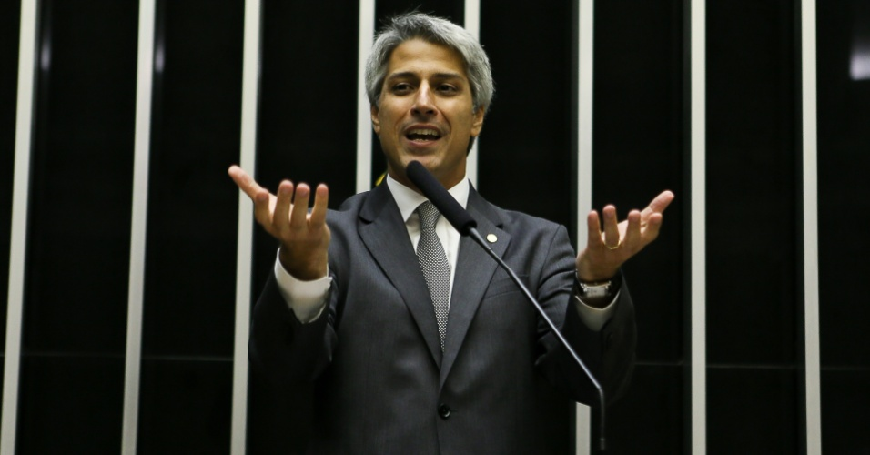

Molon é reeleito Deputado Federal pelo Rio de Janeiro
|  |
Alessandro Molon, foi reeleito Deputado Federal pelo Estado do Rio de Janeiro. Com grandes contribuições em várias áreas, os Molon do Brasil, tem orgulho de registrar também o grande destaque do parente, na área política brasileira, com a sua releição. Partindo dos imigrantes, com chegada ao Brasil em 1883, vindos de Arzignano/Vicenza, para a Serra Gaúcha, Alessandro, descende de Pietro e Francisca Ziggiotti, Giovanni Batista e Hermínia Salomoni Molon, Severino e Theresa Slaviero Molon e Nelson e Marília Molon (pais). Nasceu em Belo Horizonte, há anos reside no Rio de Janeiro, tendo o seu pai Nelson, sido comandante internacional da Varig. |
{kind=link}
Alessandro Lucciola Molon (Belo Horizonte, 28 de outubro de 1971) é um político, radialista e professor brasileiro. Durante parte da década de 1990 até ser eleito vereador, deputado estadual e deputado Federal, trabalhou na Rádio Catedral, voltada para o público católico, o que o fez ficar relativamente conhecido neste segmento. Molon é formado em História e Direito pela UFF e mestre em Direito pela PUC-RJ2, tendo lecionado em escolas públicas e particulares da capital fluminense. No ano passado teve importante papel no Congresso Nacional, como relator do marco civil na Internet.
Parabéns ALESSANDRO MOLON, colocastes o nome Molon no mais alto ponto da história política da família, honrando os nossos humildes imigrantes e todos os seus descendentes!